The upper ocean stores and releases the heat that shapes the South Asian monsoon and fuels tropical cyclones in the Bay of Bengal and the Arabian Sea. Cyclone intensification depends less on sea surface temperature (SST) than on the heat stored in the warm layer above the 26 °C isotherm and on how much colder water a storm can mix to the surface (Leipper and Volgenau, 1972; Shay et al., 2000; Price, 2009). Satellites observe the surface daily and globally, but the interior is sampled directly only by Argo floats, research cruises and moorings, which leave most of the basin unobserved on any given day.
Two families of methods bridge this gap. Ocean reanalyses such as GLORYS12 assimilate all available observations into a numerical model and deliver complete fields, but they are costly and released with delays of weeks to months. Statistical and machine-learning methods instead learn the relationship between surface observations and the subsurface from historical data. Early approaches used regression and empirical orthogonal functions; recent work uses neural networks, from multilayer perceptrons and random forests to convolutional, recurrent and transformer architectures. Among the most recent, Wang et al. (2026) introduced an Attention-enhanced 3D U-Net++ with transfer learning that reconstructs temperature and salinity in the north-western Pacific from SST and sea surface height.
The Smart India Hackathon 2026 problem statement 26066, posed by the Ministry of Earth Sciences and INCOIS, asks for such a reconstruction for the North Indian Ocean: daily subsurface temperature at standard depths from satellite inputs, trained against GLORYS12 and verified with Argo. This region is demanding: the Bay of Bengal is strongly stratified by river and monsoon freshwater, forming barrier layers; the Arabian Sea has intense seasonal upwelling; and both basins host some of the world's most destructive cyclones.
This paper makes four contributions. (i) An architecture that combines an embedding encoder, pretrained self-supervised on nineteen years of surface data, with a U-Net++ decoder that predicts anomalies from climatology together with a calibrated uncertainty. (ii) A fair benchmark against the published Attention 3D U-Net++, retrained on identical data, plus statistical baselines and an operational ocean model, with paired significance tests on independent Argo profiles. (iii) A near-real-time system that predicts each new satellite day and revises predictions as late inputs arrive. (iv) A transparent cyclone-support index and a language-model bulletin constrained to verified numbers.
The domain covers 5–30°N and 45–105°E (Fig. 1) on a regular 0.25° grid of 101 × 241 cells. Temperature is reconstructed at the 15 standard depths requested by the problem statement: 0, 5, 10, 20, 30, 50, 75, 100, 125, 150, 200, 300, 500, 700 and 1000 m. Two sub-regions are scored separately: the Bay of Bengal (BoB, 5–23°N, 80–100°E) and the Arabian Sea (AS, 5–25°N, 50–78°E).
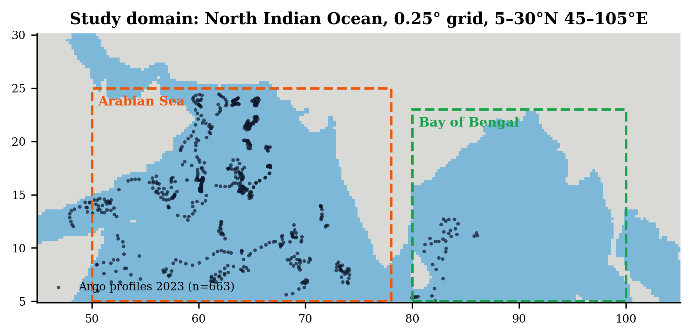
Seven daily input variables are used (Table 1). SST comes from the OSTIA level-4 analysis; sea surface salinity (SSS) from the Copernicus multi-observation SMOS/SMAP product; sea level anomaly (SLA) from the DUACS all-satellite altimetry product; surface currents (U, V) from OSCAR v2.0; and 10 m winds (U, V) from CCMP v3.1, averaged from six-hourly to daily. Every product is conservatively area-averaged to the 0.25° grid, so that finer products are not aliased and coastal cells are not contaminated by land, and masked with the GLORYS12 ocean mask. In near-real-time operation, OSCAR and CCMP (released with long delays) are replaced by geostrophic currents from DUACS NRT and the ASCAT-blended wind analysis (Sect. 5).
| Variable | Training product | Live product | Delay |
|---|---|---|---|
| SST | OSTIA L4 (moi-00168) | OSTIA NRT | ~1 d |
| SSS | SMOS/SMAP multi-obs (moi-00051) | multi-obs NRT | ~6 d |
| SLA | DUACS DT (moi-00145) | DUACS NRT | 0 d |
| Currents U, V | OSCAR v2.0 | DUACS geostrophic | 0 d |
| Winds U, V | CCMP v3.1 | ASCAT-blended L4 | ~1 d |
The training target is the GLORYS12V1 reanalysis (1/12°, daily), averaged to 0.25° and vertically interpolated to the standard depths (one level below 1000 m is retained so that the deepest level is interpolated, not extrapolated). The period 2005–2023 is used: 2005 marks the start of the dense Argo era, when GLORYS12 is best constrained. Training uses 2005–2021, 2022 selects the checkpoint and 2023 is held out. Independent validation uses quality-controlled Argo temperature profiles from 2023 (663 profiles, 9,469 measurements after interpolation to the standard depths), matched to the nearest grid cell on the same day. HYCOM GOFS 3.1, an independent operational ocean analysis obtained through Google Earth Engine, serves as an external reference.
For a target day \(t\), the input is a window \(\mathbf{X}_t \in \mathbb{R}^{C \times W \times H \times L}\) of the \(W = 15\) preceding days, where each of the seven variables is given twice — as observed and as its anomaly from a 31-day-smoothed day-of-year mean — giving \(C = 14\) channels, accompanied by binary missing-value masks and five static channels (ocean mask, latitude, longitude, \(\sin\) and \(\cos\) of the day of year). The network predicts the temperature anomaly from the GLORYS12 day-of-year climatology \(\overline{T}(d, z)\), normalised per depth by its training standard deviation \(s_z\):
where \(\mu_z\) and \(\ell_z\) are the predicted mean and log-variance at depth \(z\). Predicting anomalies lets the network spend its capacity on eddies, Kelvin and Rossby waves and cyclone cold wakes rather than on the seasonal cycle.
The architecture (Fig. 2) has four parts. A three-dimensional stem of two \(3\times3\times3\) convolutions with GELU mixes variables and neighbouring days. Temporal attention then collapses time with learned, cell-wise weights:
A CBAM encoder of residual convolution blocks, each followed by channel and spatial attention (Woo et al., 2018), produces features at full, 1/2, 1/4 and 1/8 resolution with 32, 64, 128 and 256 channels; a \(1\times1\) projection of the deepest level forms the 64-dimensional embedding \(\mathbf{z}\). A U-Net++ nested decoder (Zhou et al., 2018) computes nodes
where \(\mathcal{H}\) is a CBAM convolution block and \(\mathcal{U}\) a transposed-convolution upsampling. Deep supervision averages three \(1\times1\) heads on \(X^{0,1}, X^{0,2}, X^{0,3}\), each producing 15 means and 15 log-variances (clamped to [−8, 6]). The network has about 2.4 million parameters at base width 32.
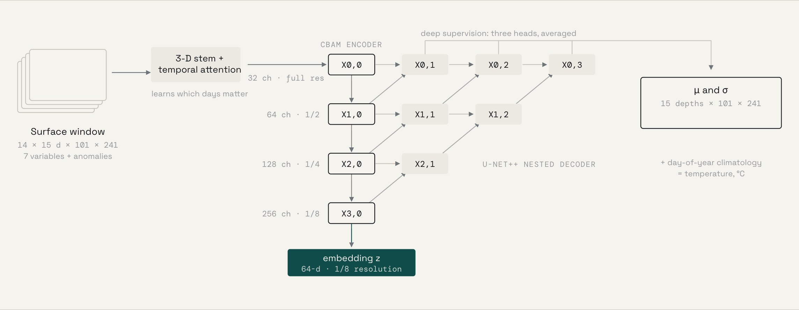
The main term is the β-weighted negative log-likelihood (Seitzer et al., 2022), which learns the uncertainty without letting the network trade accuracy for inflated variance on hard cells:
where sg denotes stop-gradient and the average runs over valid ocean cells and depths. A vertical-gradient term keeps the thermocline sharp, and a surface term enforces agreement between the 0 m prediction and the observed SST:
No monotonicity constraint is imposed, since temperature inversions under the Bay of Bengal barrier layer are real.
Before any subsurface label is used, the encoder is pretrained as a masked autoencoder (He et al., 2022) on the full surface record: half of the 16 × 16 patches of the last three days are hidden and whole variables are randomly dropped, and a light decoder reconstructs the last-day surface fields. Only the encoder is kept. This gives the embedding a representation of the surface ocean learned from all nineteen years, independent of the reanalysis.
All layers are fine-tuned against GLORYS12 (Table 2). Training uses random 64 × 128 crops (the network is fully convolutional; validation and inference use the full domain padded to 112 × 256), AdamW with weight decay 0.05, an exponential moving average of the weights, mixed precision and early stopping on the 2022 validation RMSE. Variable dropout removes SSS, currents or winds with probability 0.3 so that the model remains usable when these arrive late. Three models are trained with seeds 42, 7 and 1234 (Fig. 3). The ensemble mean is the prediction; its variance combines the mean member variance and the spread of the member means:
| Setting | Value |
|---|---|
| Window | 15 days |
| Base width / levels / embedding | 32 / 4 / 64 |
| Optimiser | AdamW, lr 2×10⁻⁴, wd 0.05, cosine |
| Crops | 64 × 128 cells |
| EMA decay | 0.999 (with warm-up) |
| Variable dropout | 0.3 (SSS, currents, winds) |
| Loss weights | β-NLL (β = 0.5), gradient 0.5, surface 0.1 |
| Early stopping | patience 8 epochs |
| Ensemble | seeds 42, 7, 1234 |
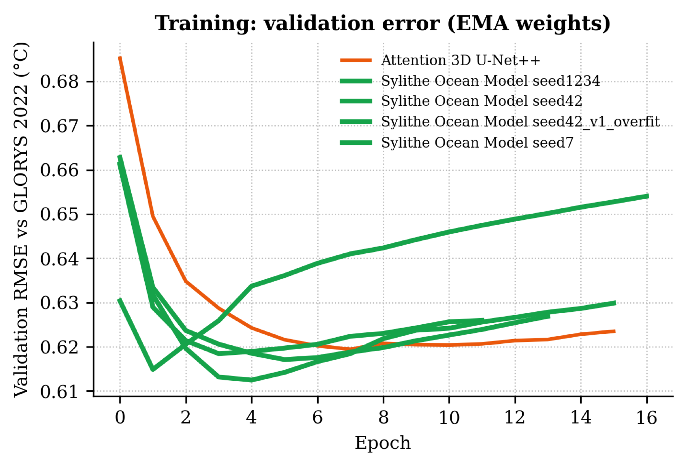
Four comparators are evaluated on the same grid, depths and test year. (i) The Attention 3D U-Net++ of Wang et al. (2026), reimplemented with its published layout — the input window treated as the third dimension, spatial-only pooling and attention-enhanced nested skip paths — and retrained on our data with the same split, inputs and budget. (ii) Ridge regression per depth on local surface features. (iii) Climatology, the GLORYS12 day-of-year mean. (iv) HYCOM GOFS 3.1, an independent operational analysis. GLORYS12 itself is also scored against Argo; because it assimilates Argo profiles, it is a reference rather than a competitor.
We report RMSE, bias and Pearson correlation \(r\) against GLORYS12 over all ocean cells and days of 2023, and against Argo over all matched measurements. Significance is assessed with a paired bootstrap over Argo profiles (2,000 resamples, all depths of a profile resampled together); \(p\) is the share of resamples in which the Sylithe ensemble is not better. Uncertainty calibration is measured by the fraction of Argo errors within ±1σ and ±2σ (68 % and 95 % for a calibrated Gaussian). Derived diagnostics follow standard definitions: the depths D20 and D26 of the 20 °C and 26 °C isotherms, the mixed-layer depth as the first depth 0.5 °C colder than at 10 m, and the tropical cyclone heat potential
with \(\rho = 1025\) kg m⁻³ and \(c_p = 3985\) J kg⁻¹ K⁻¹, reported in kJ cm⁻².
Table 3 summarises the 2023 scores. Against GLORYS12, the ensemble reaches 0.662 °C, 41 % below climatology (1.119 °C) and slightly below the retrained Attention 3D U-Net++ (0.668 °C); ridge regression reaches 0.740 °C. HYCOM differs strongly from GLORYS12 (1.193 °C) because it is an independent model with its own biases. Against Argo, the ranking holds: 0.757 °C for the ensemble (0.754 °C for a single member) versus 0.762 °C for the published architecture, 0.804 °C for ridge, 0.806 °C for HYCOM and 0.952 °C for climatology. Only GLORYS12 (0.684 °C) scores lower, as expected for a product that assimilates the same floats. The release-style comparison in Fig. 4 expresses each score as skill over climatology.
| Method | Type | vs GLORYS12 | vs Argo | Argo 0–200 m | Argo 200–1000 m | Argo BoB | Argo AS | Argo bias |
|---|---|---|---|---|---|---|---|---|
| GLORYS12 reanalysis | reference | — | 0.684 | 0.761 | 0.369 | 0.758 | 0.680 | +0.158 |
| ★ Sylithe Ocean Model, 3-model ensemble | ours | 0.662 | 0.757 | 0.850 | 0.355 | 0.833 | 0.754 | +0.206 |
| ★ Sylithe Ocean Model, single model | ours | 0.680 | 0.754 | 0.846 | 0.357 | 0.853 | 0.749 | +0.179 |
| Attention 3D U-Net++ (Wang et al., 2026), retrained | published | 0.668 | 0.762 | 0.856 | 0.363 | 0.879 | 0.757 | +0.218 |
| Ridge regression | baseline | 0.740 | 0.804 | 0.906 | 0.358 | 0.894 | 0.801 | +0.213 |
| HYCOM GOFS 3.1 | reference | 1.193 | 0.806 | 0.901 | 0.406 | 0.763 | 0.813 | −0.178 |
| Climatology (GLORYS12 day-of-year mean) | baseline | 1.119 | 0.952 | 1.076 | 0.396 | 1.005 | 0.947 | −0.099 |
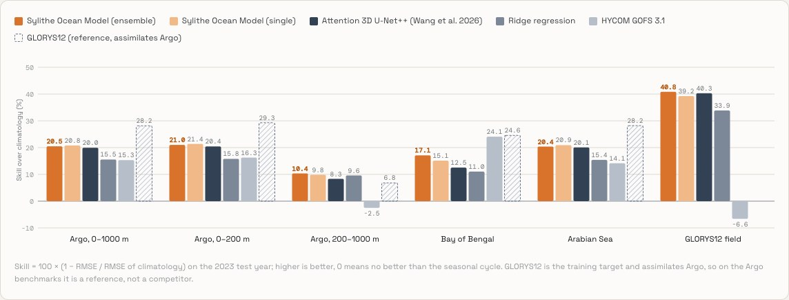
Errors are smallest near the surface, where SST constrains the solution, and largest in the thermocline (75–150 m), where small vertical displacements of a steep gradient produce large temperature differences (Figs. 5 and 6; Table 4). Against Argo, the ensemble's RMSE rises from 0.35 °C at the surface to 1.25 °C at 100–125 m and falls to 0.22 °C at 1000 m. Below 300 m it matches or beats GLORYS12 itself (0.491 vs 0.495 °C at 300 m; 0.313 vs 0.327 °C at 500 m; 0.224 vs 0.270 °C at 1000 m), and it beats HYCOM at every depth down to 700 m.
| Depth (m) | ★ Sylithe | GLORYS12 | HYCOM |
|---|---|---|---|
| 0 | 0.348 | 0.274 | 0.460 |
| 10 | 0.344 | 0.262 | 0.489 |
| 30 | 0.809 | 0.677 | 0.861 |
| 50 | 0.856 | 0.701 | 0.884 |
| 75 | 1.005 | 0.938 | 1.098 |
| 100 | 1.248 | 1.129 | 1.311 |
| 125 | 1.253 | 1.170 | 1.208 |
| 150 | 1.031 | 0.948 | 1.036 |
| 200 | 0.722 | 0.649 | 0.837 |
| 300 | 0.491 | 0.495 | 0.591 |
| 500 | 0.313 | 0.327 | 0.351 |
| 700 | 0.292 | 0.310 | 0.304 |
| 1000 | 0.224 | 0.270 | 0.225 |
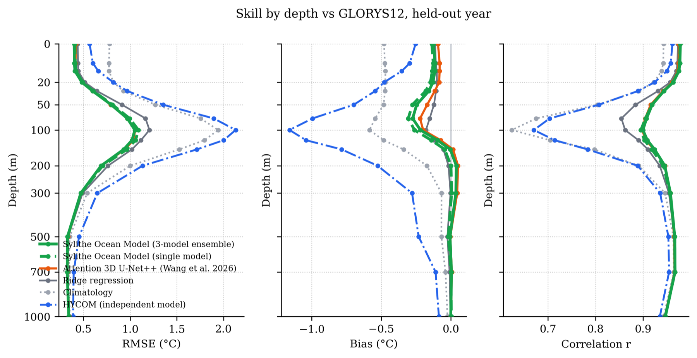
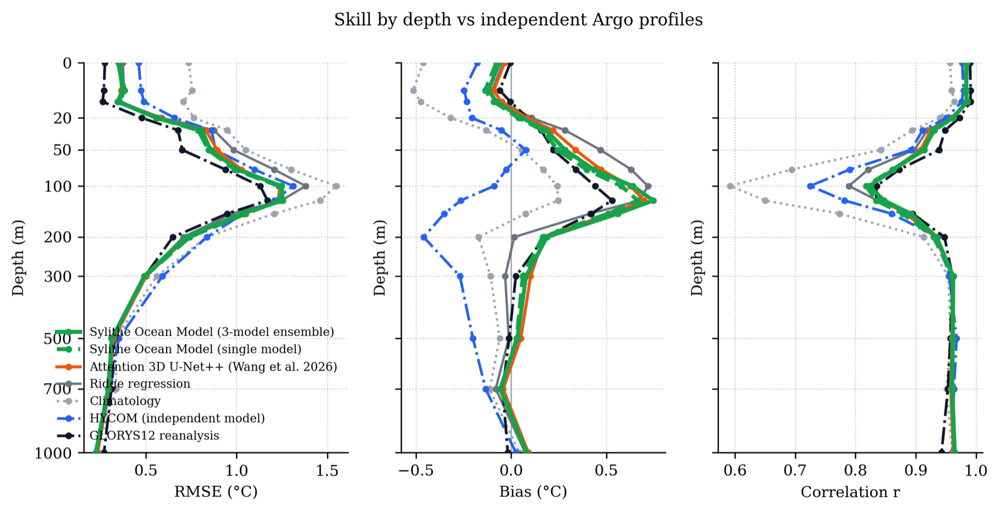
Monthly scores (Figs. 7 and 12) show the largest thermocline errors in the transition months, when the thermocline moves fastest, and correlation above 0.9 below 300 m throughout the year. Spatially (Figs. 8–10), errors concentrate in the western Arabian Sea upwelling zone, along the Somali and Omani coasts and in the eddy-rich western Bay of Bengal. The reconstruction reproduces the large-scale structure and the major eddies of GLORYS12 at every depth, while being smoother at the smallest scales (Fig. 8).
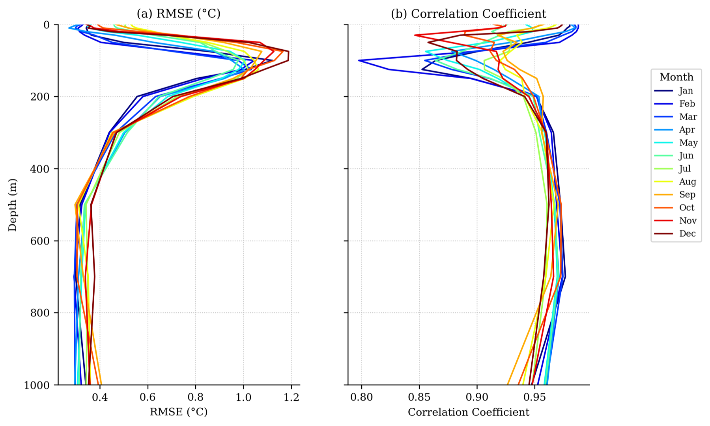
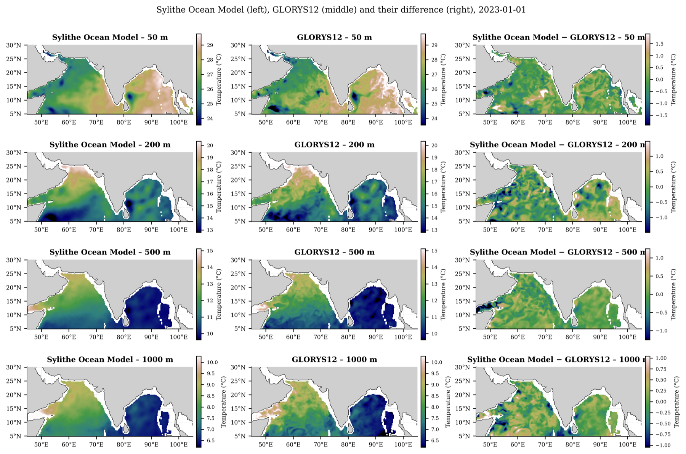
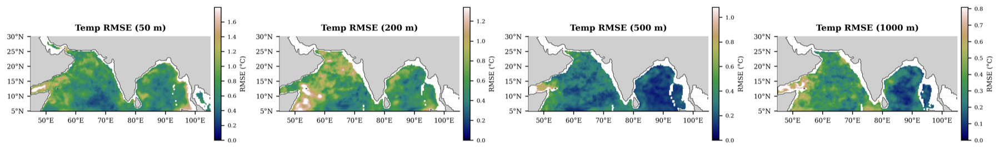
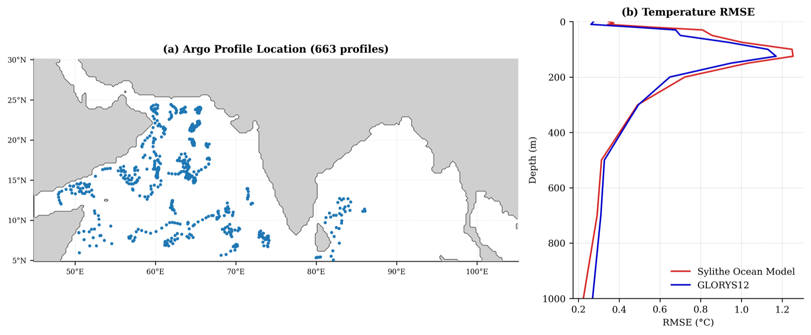
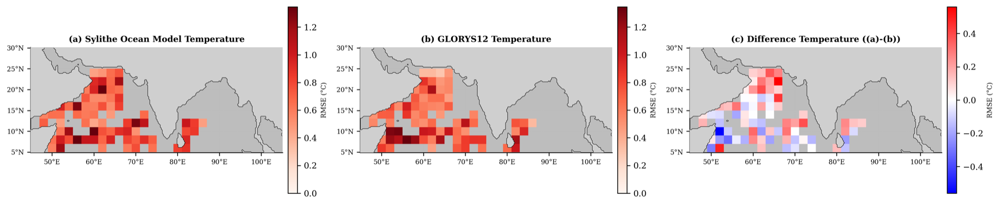
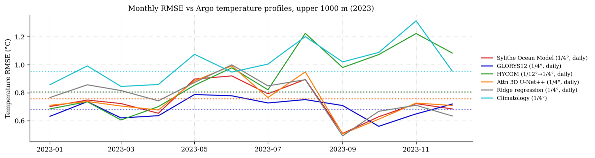
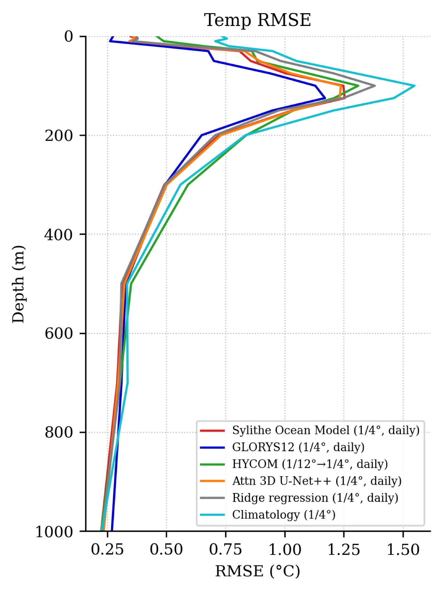
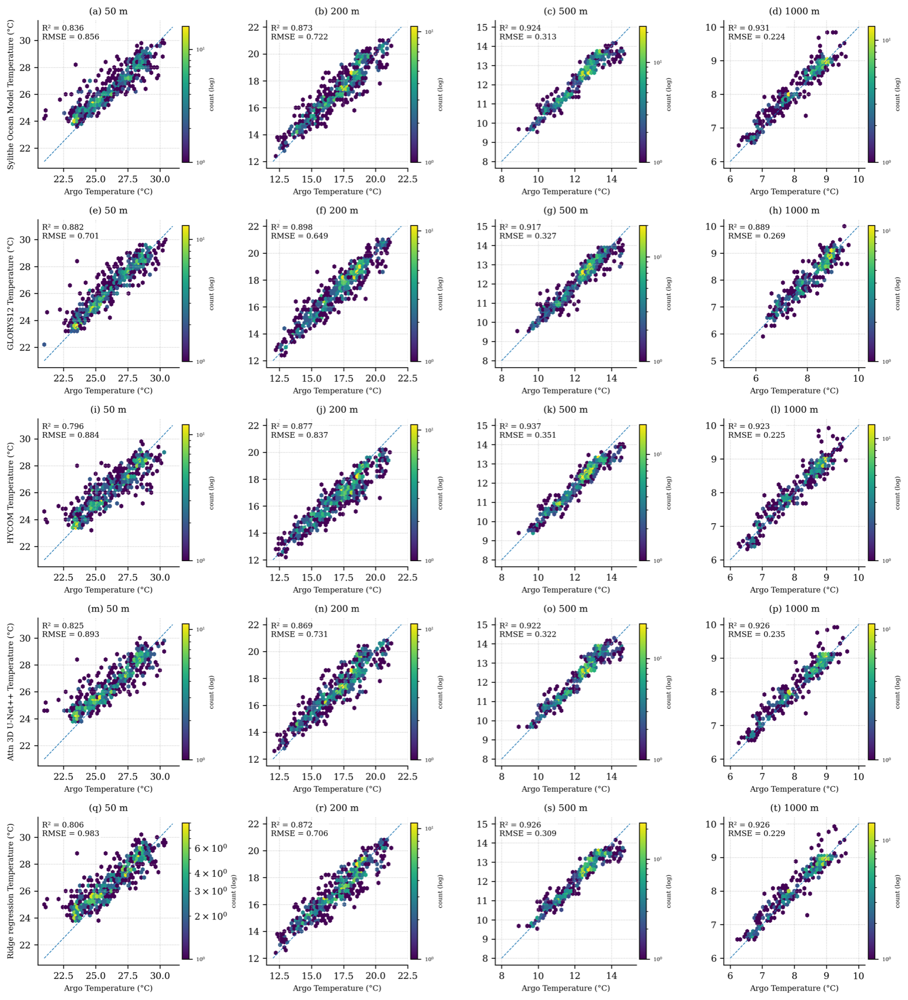
Table 5 lists paired bootstrap results. The ensemble is significantly better than ridge regression, climatology and HYCOM over the whole column (\(p \le 0.002\)). Against the published Attention 3D U-Net++, the whole-column gain (0.757 vs 0.762 °C) is not significant (\(p = 0.117\)), but the gain is significant in the deep ocean (200–1000 m, \(p = 0.003\)), in the Bay of Bengal (\(p = 0.007\) over 0–1000 m and 0–200 m) and in the deep Arabian Sea (\(p < 0.001\)). The Bay of Bengal result is notable because this is the most stratified and cyclone-prone basin.
| Comparison | Region · depths | Profiles | RMSE Sylithe | RMSE other | 95 % CI of gain | p |
|---|---|---|---|---|---|---|
| Attention 3D U-Net++ | NIO · 0–1000 m | 663 | 0.757 | 0.762 | −0.003 … +0.015 | 0.117 |
| Attention 3D U-Net++ | NIO · 200–1000 m | 661 | 0.355 | 0.363 | +0.003 … +0.014 | 0.003 |
| Attention 3D U-Net++ | BoB · 0–1000 m | 37 | 0.833 | 0.879 | +0.012 … +0.078 | 0.007 |
| Attention 3D U-Net++ | BoB · 0–200 m | 37 | 0.957 | 1.011 | +0.014 … +0.091 | 0.007 |
| Attention 3D U-Net++ | AS · 200–1000 m | 609 | 0.351 | 0.361 | +0.004 … +0.017 | <0.001 |
| HYCOM GOFS 3.1 | NIO · 0–1000 m | 663 | 0.757 | 0.806 | +0.016 … +0.083 | 0.002 |
| Ridge regression | NIO · 0–1000 m | 663 | 0.757 | 0.804 | +0.029 … +0.065 | <0.001 |
| Climatology | NIO · 0–1000 m | 663 | 0.757 | 0.952 | +0.167 … +0.224 | <0.001 |
A section through the Bay of Bengal during Cyclone Mocha (12 May 2023; Fig. 15) shows that the reconstruction reproduces the depth of the thermocline and the isotherm displacements seen in GLORYS12. The TCHP derived from the reconstruction tracks the reanalysis in the Arabian Sea and Bay of Bengal (Fig. 16); during Mocha it is about 10 kJ cm⁻² lower than GLORYS12 in the Bay of Bengal and responds a couple of days late to the storm's cold wake, a consequence of the 15-day input window.
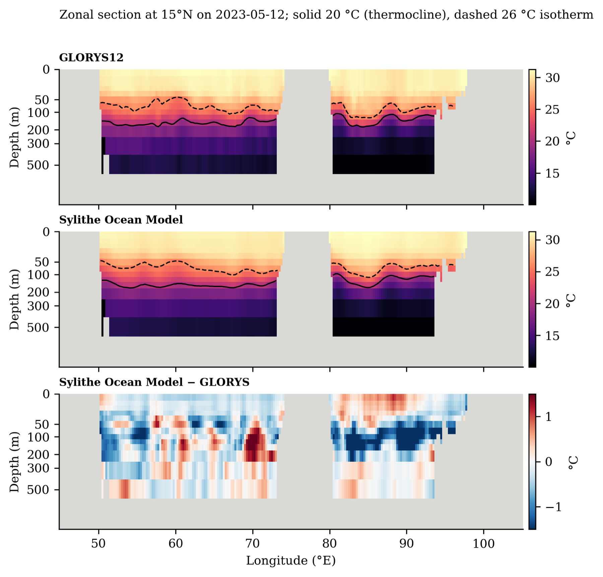
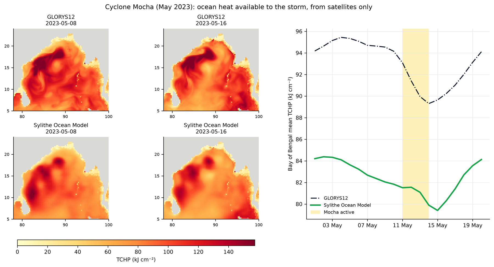
The predicted σ is largest in the thermocline and in the Bay of Bengal, matching where errors are largest. Uncalibrated (Fig. 17), 57 % of Argo errors fall within ±1σ, against 68 % for a perfectly calibrated Gaussian: the uncertainty is informative but too small, partly because the network is trained against GLORYS12, whose own error against Argo is not part of the target. Section 4.7 corrects this with a per-depth scale fitted on the validation year.
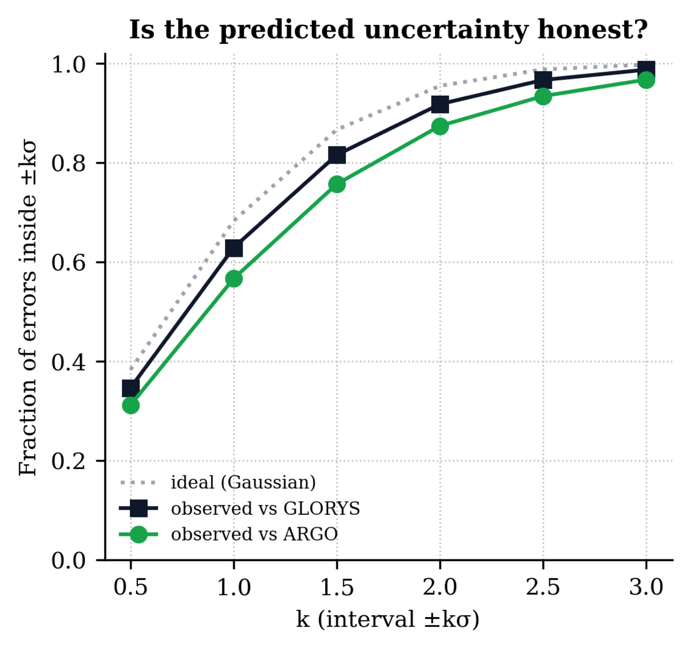
Gridded Argo. As a second independent benchmark, monthly 2023 means of every product were compared with the Roemmich–Gilson gridded Argo analysis (1°, monthly), each product area-averaged to the analysis cells and evaluated at the standard depths (Table 7, Fig. 20). The Sylithe Ocean Model has the lowest error in every layer and basin: 0.836 °C over 0–1000 m against 0.859 °C for HYCOM and 0.958 °C for GLORYS12, and 0.235 °C below 200 m, about 31 % below both references. Because a monthly gridded analysis is smooth, it favours smoother fields, and part of the lead over GLORYS12 reflects this; the daily Argo comparison of Sect. 4.1 remains the primary score.
| Product | 0–1000 m | 200–1000 m | BoB | AS |
|---|---|---|---|---|
| ★ Sylithe Ocean Model | 0.836 | 0.235 | 0.782 | 0.858 |
| HYCOM GOFS 3.1 | 0.859 | 0.351 | 0.834 | 0.877 |
| GLORYS12 | 0.958 | 0.341 | 0.915 | 0.965 |
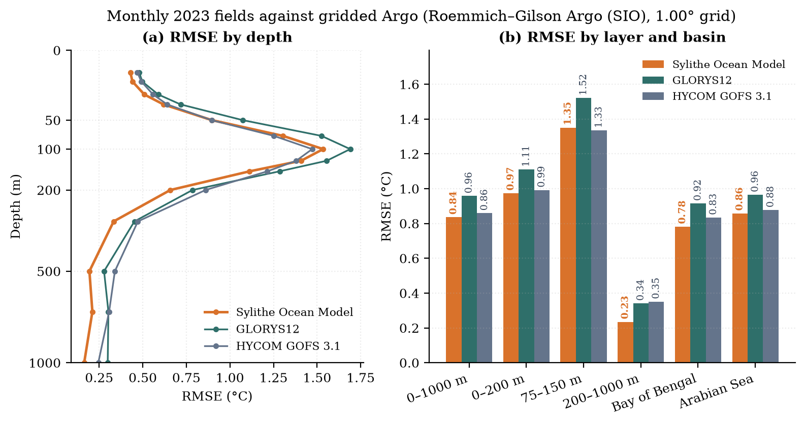
Calibrated uncertainty. For each depth, a scale \(c_z\) on σ was fitted on the 2022 Argo profiles (validation year) so that \(|e|/(c_z\sigma)\) has its 68.27 % quantile at one. Applied to 2023, never used for fitting, the share of Argo errors within ±1σ rises from 56.6 % to 66.6 % (ideal 68.3 %) and within ±2σ from 87.4 % to 94.1 % (ideal 95.4 %); the largest corrections, 1.4–1.6, are in the thermocline (Fig. 21). The calibrated σ is used by the live system.
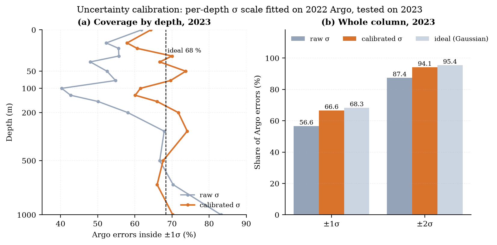
Cyclone tracks. Every six-hourly IBTrACS position of the seven 2023 North Indian Ocean cyclones inside the domain (173 points, including Mocha, Biparjoy and Tej) was matched to the reconstruction of the previous day, before the storm's cold wake. Heat potential along the tracks correlates with GLORYS12 at r = 0.88 with a mean bias of −9.9 kJ cm⁻², concentrated under the two most intense storms (Mocha, Tej). The Ocean Cyclone Potential Index of Sect. 6 averaged 0.66 at the 26 points followed by rapid intensification (+30 kt in 24 h) against 0.54 elsewhere, an area under the ROC curve of 0.70 without any tuning of its weights (Fig. 22).
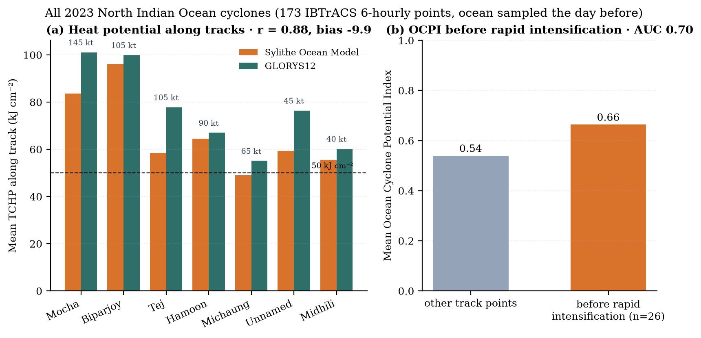
The trained ensemble runs operationally on CPU in a scheduled GitHub Actions workflow every six hours. Each run (i) queries the Copernicus Marine catalogue for the newest date of each near-real-time product, (ii) ingests only new days onto the 0.25° grid, (iii) predicts every day whose SST and SLA are available, (iv) re-predicts any of the last 21 days whose input window gained data (salinity arrives about six days late and winds about one day late), incrementing a per-day revision number, (v) scores the last 30 days against newly surfaced Argo floats, and (vi) publishes maps, regional statistics, provenance and status to a public branch read by the web console. Because the model was trained with variable dropout, a prediction is available as soon as SST and SLA are published. In its first month of operation, the live ensemble scored 1.046 °C RMSE (bias +0.295 °C) against 346 real-time Argo profiles (4,448 measurements), higher than the 0.757 °C of the reprocessed evaluation because near-real-time currents and winds differ from the reprocessed OSCAR and CCMP products used in training. A short fine-tuning on the near-real-time archive is the natural remedy.
From the inputs and the reconstructed column we compute an Ocean Cyclone Potential Index (OCPI) at every cell. Each of seven drivers is mapped linearly to [0, 1] between published limits, and the index is their weighted mean, set to zero where SST < 26 °C:
| Driver | Limits | w |
|---|---|---|
| Upper-100 m mean T (Price, 2009) | 25 → 29.5 °C | 0.25 |
| TCHP (Mainelli et al., 2008) | 0 → 120 kJ cm⁻² | 0.25 |
| SST (Gray, 1968) | 26 → 30.5 °C | 0.15 |
| D26 (Shay et al., 2000) | 30 → 120 m | 0.10 |
| Mixed-layer depth (Lin et al., 2013) | 10 → 60 m | 0.10 |
| SLA (Lin et al., 2005) | −0.1 → 0.2 m | 0.10 |
| SSS, barrier layer (Balaguru et al., 2012) | 35 → 31 psu | 0.05 |
Hotspots are the highest-OCPI cells at least 4° apart; a disturbance watch flags cells where the satellite surface wind has cyclonic relative vorticity above 2 × 10⁻⁵ s⁻¹ and speed of at least 10 m s⁻¹ over ocean with OCPI ≥ 0.5. The system overlays tropical cyclones reported by GDACS (JTWC tracks and forecasts) and, in its live window, captured the Bay of Bengal system ONE-26 of 22–24 September 2026 (Fig. 18). The index describes ocean support only; it is not a genesis or track forecast, since vertical wind shear and humidity are not in the data.
The structured numbers — regional means, hotspots with their strongest drivers, watch points and seven-day changes — are passed to a large language model (DeepSeek) that words a bulletin. The language model computes nothing: every number in its answer must appear in the input, otherwise the answer is discarded and a template bulletin is published.
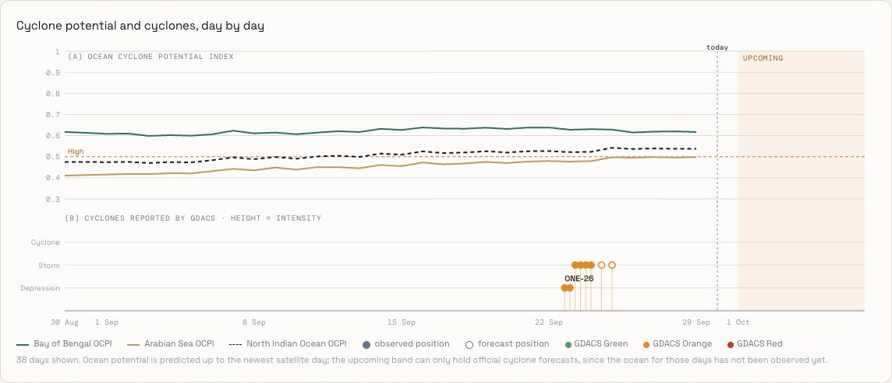
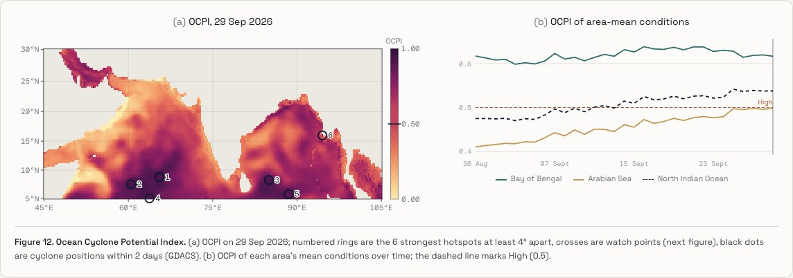
Four design choices explain most of the gain over the published architecture on identical data. Predicting anomalies from climatology removes the dominant seasonal signal from the learning problem. Self-supervised pretraining gives the encoder a representation of the surface ocean learned from all nineteen years, which appears to help most where the surface–subsurface link is weakest: the deep ocean and the strongly stratified Bay of Bengal. The β-NLL and vertical-gradient losses keep the thermocline sharp while learning where the model is uncertain. Finally, seed averaging and weight EMA reduce variance, which matters most for the small eddies that dominate day-to-day thermocline variability.
Several limitations remain. The lead over the published method is small over the full column. The model learns from GLORYS12 and inherits part of its warm bias against Argo (about +0.2 °C). Reconstructions are smoother than the reanalysis at the smallest eddy scales, and heat potential is about 10 kJ cm⁻² low under the most intense cyclones. Equal-budget ablations with a linear probe of the self-supervised embedding, a near-real-time fine-tune and a thermocline-weighted fine-tune are implemented and remain to be run. The cyclone index weights are set from the literature rather than fitted, and should be calibrated against past best tracks (IBTrACS, IMD). Near-real-time accuracy is lower than the reprocessed evaluation until the model is fine-tuned on near-real-time inputs.
The Sylithe Ocean Model reconstructs daily North Indian Ocean temperature from the surface to 1000 m using only satellite observations, with a per-point uncertainty. On a withheld year it achieves 0.662 °C RMSE against GLORYS12 and 0.757 °C against independent Argo profiles, outperforming a state-of-the-art published architecture retrained on the same data — significantly so in the deep ocean and the Bay of Bengal — as well as statistical baselines and an operational ocean model, and it has the lowest error against independent gridded Argo. Its uncertainty is calibrated, and its heat potential tracks the reanalysis along every 2023 cyclone. It runs in near real time at no infrastructure cost and supports cyclone-relevant diagnostics and verified language-model bulletins. Future work will fine-tune on near-real-time inputs, add salinity as a second output, calibrate the cyclone index against observed tracks and extend the system to marine-heatwave and fisheries applications.
Code, notebooks, the operational workflow and the web console are available at github.com/karan27-dev/Sylithe_Ocean_Embedding. Live predictions are published on the live-data branch of that repository. Input and target data are freely available from Copernicus Marine (GLORYS12, OSTIA, DUACS, multi-observation SSS), NASA PO.DAAC (OSCAR, CCMP), Ifremer ERDDAP (Argo), Google Earth Engine (HYCOM) and GDACS.
KS conceived the study, designed and implemented the model, the data, training and evaluation pipelines, the near-real-time system and the web console, and wrote the manuscript. SP contributed the web data-export module and the console. AS, MS, NS and SY contributed to the discussion of the results and to the review of the manuscript.
The authors declare no competing interests.
We thank the Ministry of Earth Sciences and INCOIS for posing problem statement 26066, and the Copernicus Marine Service, NASA PO.DAAC, the Argo Program and GDACS for open data.
Balaguru, K., Chang, P., Saravanan, R., et al.: Ocean barrier layers' effect on tropical cyclone intensification, P. Natl. Acad. Sci. USA, 109, 14343–14347, 2012.
Gray, W. M.: Global view of the origin of tropical disturbances and storms, Mon. Weather Rev., 96, 669–700, 1968.
He, K., Chen, X., Xie, S., Li, Y., Dollár, P., and Girshick, R.: Masked autoencoders are scalable vision learners, in: Proc. CVPR, 16000–16009, 2022.
Leipper, D. F. and Volgenau, D.: Hurricane heat potential of the Gulf of Mexico, J. Phys. Oceanogr., 2, 218–224, 1972.
Lin, I.-I., Wu, C.-C., Emanuel, K. A., Lee, I.-H., Wu, C.-R., and Pun, I.-F.: The interaction of Supertyphoon Maemi (2003) with a warm ocean eddy, Mon. Weather Rev., 133, 2635–2649, 2005.
Lin, I.-I., Black, P., Price, J. F., et al.: An ocean coupling potential intensity index for tropical cyclones, Geophys. Res. Lett., 40, 1878–1882, 2013.
Mainelli, M., DeMaria, M., Shay, L. K., and Goni, G.: Application of oceanic heat content estimation to operational forecasting of recent Atlantic category 5 hurricanes, Weather Forecast., 23, 3–16, 2008.
Price, J. F.: Metrics of hurricane-ocean interaction: vertically-integrated or vertically-averaged ocean temperature?, Ocean Sci., 5, 351–368, 2009.
Seitzer, M., Tavakoli, A., Antic, D., and Martius, G.: On the pitfalls of heteroscedastic uncertainty estimation with probabilistic neural networks, in: Proc. ICLR, 2022.
Shay, L. K., Goni, G. J., and Black, P. G.: Effects of a warm oceanic feature on Hurricane Opal, Mon. Weather Rev., 128, 1366–1383, 2000.
Wang, H., Zhang, L., Yang, S., Yan, X., and Li, Z.: Attention enhanced 3D-U-Net++ ocean temperature and salinity reconstruction in the northwestern Pacific based on transfer learning, Earth Syst. Sci. Data, 18, 4617–4638, 2026.
Woo, S., Park, J., Lee, J.-Y., and Kweon, I. S.: CBAM: Convolutional Block Attention Module, in: Proc. ECCV, 3–19, 2018.
Zhou, Z., Rahman Siddiquee, M. M., Tajbakhsh, N., and Liang, J.: UNet++: a nested U-Net architecture for medical image segmentation, in: DLMIA workshop, 3–11, 2018.
Data: Copernicus Marine Service products GLORYS12V1 (doi:10.48670/moi-00021), OSTIA (moi-00168), multi-observation SSS (moi-00051), DUACS (moi-00145); OSCAR v2.0 and CCMP v3.1 (NASA PO.DAAC); HYCOM GOFS 3.1; Argo (doi:10.17882/42182); GDACS.